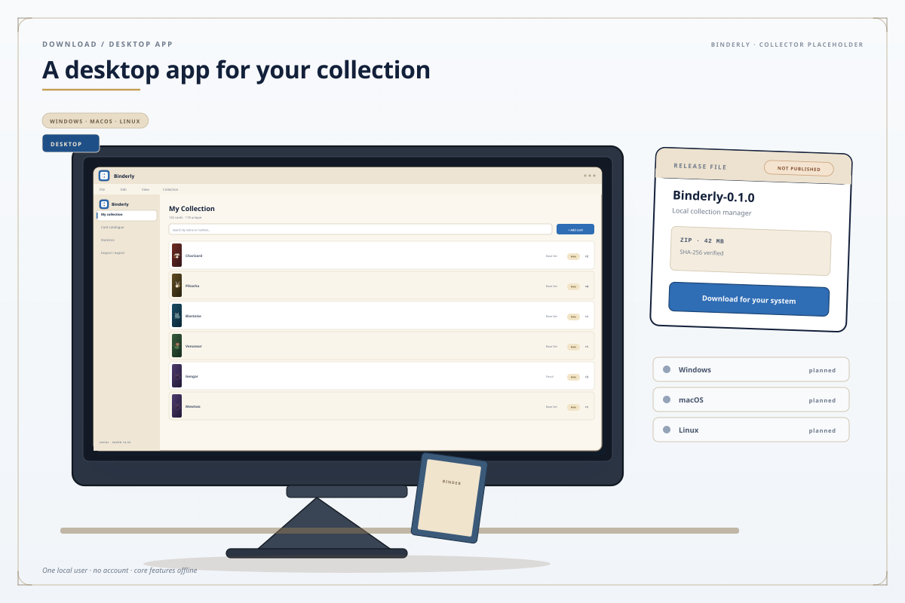

Download
Download Binderly
A Java desktop application for the Pokémon cards you own: one local user, no account, and a collection saved on your own computer.
The specification and first-run flow are documented below. Packaging details follow with the first public build.
- Java desktop
- Single local user
- Offline core
- Local storage
- No account or cloud
Binderly for desktop
Version 0.1.0
One download, one computer, one collection. Binderly runs as a desktop application and keeps your entries on the machine it runs on.
No release file is attached to this page yet. The download control below stays inactive until the project configuration points to a real, verifiable file.
Architecture at a glance
- Java desktop application
- Core features offline
- Local storage
- Single local user
- No account, cloud, or marketplace
First-run preview
-
Get the file
Download the release file from this page once a build is attached.
-
Launch it locally
Open Binderly on your desktop. The core workflow needs no login or connection.
-
Add a card
Search the catalogue, choose the copy you own, and save it to your collection.
Confirmed by specification. Pending release packaging.
Two different kinds of certainty. The left column is fixed by the project specification; the right column can only be filled in once the first build is packaged and tested.
Confirmed by the specificationSettled
- Java desktop application — not mobile or browser-based.
- One local user — no profiles, teams, or social features.
- Offline core — browse, add, edit, search, sort, filter, and save.
- Local storage — the collection stays on the device.
- No account or cloud — no sign-up, password, or sync.
- No marketplace — no buying, selling, trading, or price tracking.
Pending release packagingOpen
- Java runtime — the exact version required, and how to check yours.
- Package format — installer or runnable JAR, to be confirmed with the build.
- Tested systems — To be confirmed for the first release.
- Disk space — minimum free space, once the packaged size is known.
- Storage path — where the local collection file will live on each system.
Local is the requirement, not a feature.
Binderly is designed around one computer and one collection. The catalogue describes the cards that exist; your collection records the copies you own, with variant, condition, and quantity. Both stay on the machine.
That is why the core workflow does not wait for a server, an account, or a connection. It also means the release package carries more responsibility than a typical web page: the file you download is the whole application.

From release file to first card.
The onboarding flow is already fixed. Only the packaging step changes when the build is finalised.
-
Get the release file
Download it from the release panel above. The control stays inactive until a real file is attached, so there is no dead link to follow.
-
Install or unpack
Place the application on your desktop using the format supplied with the release. The installer or JAR format, Java runtime version, and any platform-specific notes will be published beside the download.
-
Add your first card
Search the catalogue, choose the variant and condition of the copy you own, and save it. The entry is stored locally and is there the next time you open the app.

Pre-release technical checklist
These checks stand between the documented flow and a release file people can trust.
- Build signed off and labelled 0.1.0.
- Java runtime pinned and documented.
- Package format and checksum published with the file.
- Install tested on every supported operating system.
- First run tested from a clean machine.
- Supported systems finalised in
site-config.js.
What ships in the box.
The release is more than an application file. Each item below exists so that the download can be installed, verified, and understood without guesswork.
-
01 · Application
Application build
A packaged Java desktop build containing the catalogue and local collection features described across this site.
-
02 · Runtime
Java requirement
The exact runtime version, plus a short way to check yours before launch.
-
03 · Integrity
Checksum
A checksum for the published file, so the download can be verified before it is opened.
-
04 · Guide
Installation guide
Platform-specific steps from download to first launch, matching the three-step flow above.
-
05 · Notes
Release notes
A plain-language record of what works in the build, what is planned, and any known limitations.
Before you install.
Short answers about accounts, storage, offline use, and what Binderly will and will not do.
Is the application free?
No price, licence, or subscription has been announced. Binderly is a SEP1 university project built as coursework; its terms will be published with the release file.
Do I need an account?
No. There is no sign-up, no profile, and no password. Binderly is designed for one local user on one computer, and everything you record belongs to that local collection.
Can I use it offline?
Yes. The core features are designed to work without an internet connection: browsing the catalogue, adding and editing entries, searching, sorting, filtering, and saving to local storage.
Where is my collection saved?
On the device where the application runs. The collection is stored locally rather than in the cloud, so it stays with that computer and is not shared with anyone else. The exact storage path will be documented with the release.
Can I back up my collection?
Not yet. Planned Export and import are planned: an export would write your collection to a backup file, and an import would restore it after a clear confirmation. The import & export guide describes the intended workflow. Until the feature is implemented, Binderly has no backup or restore option.
Does the application support buying or selling cards?
No. Binderly has no marketplace, no trading, and no buying or selling. It also does not estimate card values or track prices. It records the cards you already own, described by set, number, type, stage, condition, and variant.